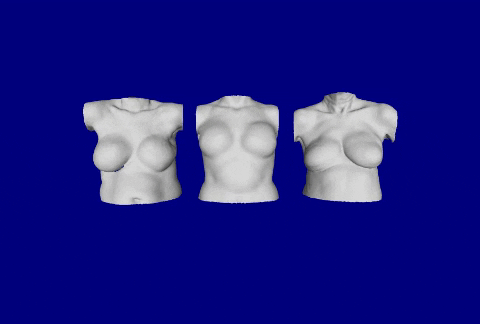
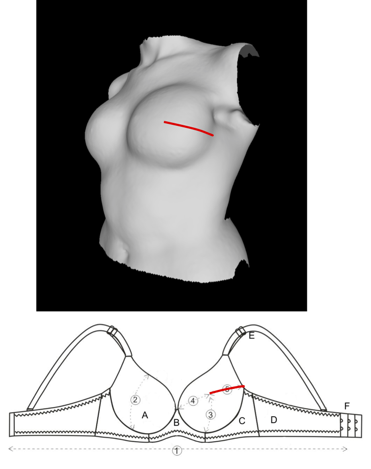

Breast Reconstruction Decision-Making
Patients considering breast reconstruction after mastectomy face three major decisions about their care: Should I have reconstruction?, What type of reconstruction should I get?, and When should I have the surgery?. Many decision aids and information delivery tools exist to help patients make these decisions, but most only include cartoon illustrations or generic pictures of reconstruction outcomes. Patients usually then only have access to image galleries or the internet to find and sort through example images that may lead patients to develop unrealistic expectations of their outcomes. Our goal is to understand patients’ and care teams’ needs for better post-reconstruction appearance counseling and to develop a patient-specific decision support system to improve patient care.
 My research combines computer learning tools with clinical experience to provide patients with examples of reconstruction outcomes of prior patients who are similar to them. I have conducted surveys with breast cancer survivors’ to understand their experiences and needs for appearance counseling and consulted care team members, such as reconstruction surgeons and nurses to determine what can be implemented in the clinic. We use 3D torso photographs and medical record data of prior patients as inputs to case-based reasoning system to find similar prior patients to show to newly diagnosed patients. We plan to implement this tool into the clinic to help patients and care teams discuss realistic outcomes.
Bra Design for Breast Reconstruction
 After breast cancer surgery and breast reconstruction, women face new challenges in bra fit and have different bra needs than before their surgeries. We have conducted focus groups and surveys to learn about survivors’ experiences and needs regarding wearing and buying bras after reconstruction. It is clear that off-the-shelf bras do not meet women’s needs over many dimensions: comfort, fit, fabric, price, colors, and availability. In collaboration with clothing designers, we are using 3D torso photographs to identify trends in changes in bra measurements for women after reconstruction, which can be used to develop better undergarments. We hope this work improves the quality of life for breast cancer survivors.